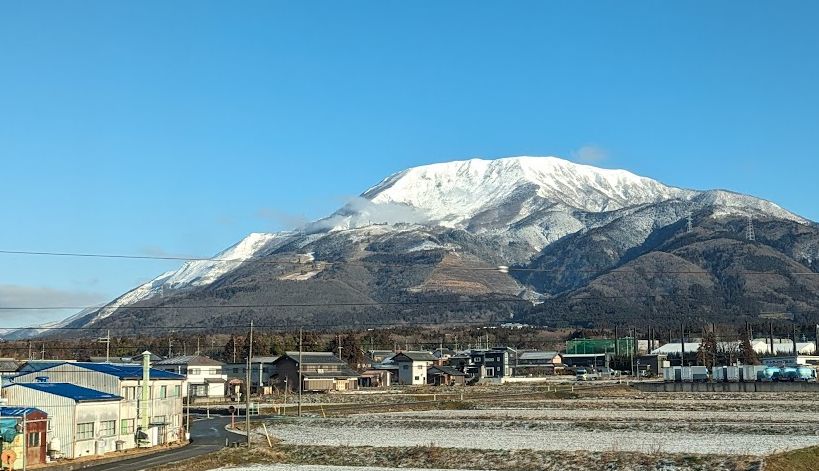
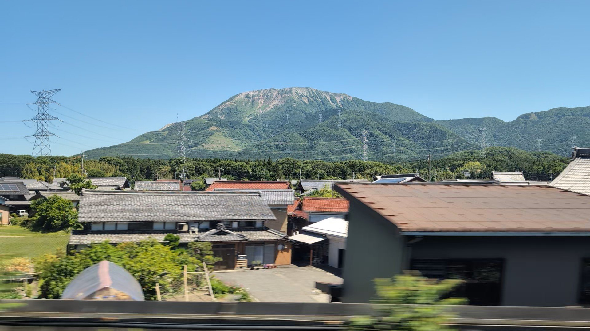
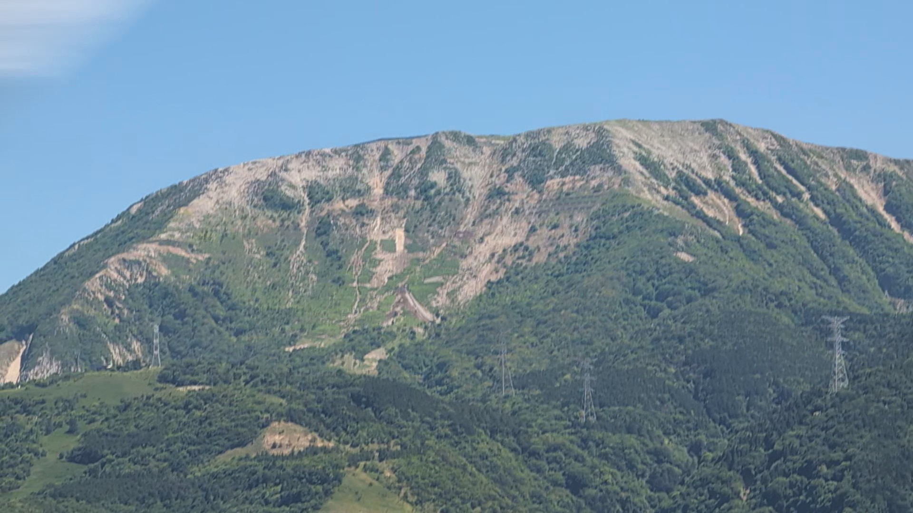

TOKAIDO SHINKANSEN WINDOW VIEW
When can you see Mt. Ibuki from the Shinkansen?
Sekigahara's snowy mountain.

- Section
- Gifu-Hashima → Maibara
- Seat side
- Seat E · mountain side
- Timing
- About 110 minutes after leaving Tokyo on a Nozomi train
- Photos
- 3 photos
How to find Mt. Ibuki
Before Maibara, Mt. Ibuki rises on the Fuji side — a storied peak that appears in Japan's oldest chronicles, magnificent under winter snow. You're crossing Sekigahara, where the decisive battle of 1600 changed Japanese history. At 285 km/h.
If you are traveling from Tokyo toward Shin-Osaka, start watching the Seat E · mountain side window as you approach Gifu-Hashima → Maibara. If you are traveling toward Tokyo, the order is reversed.
Why this view matters
Mt. Ibuki is one of the window views that make the Tokaido Shinkansen more than a transfer. The train moves fast, so visibility depends on weather, seat position, and timing.
Mt. Ibuki in photos

